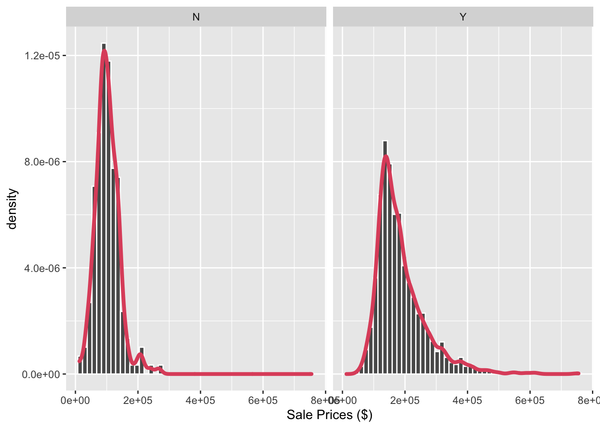
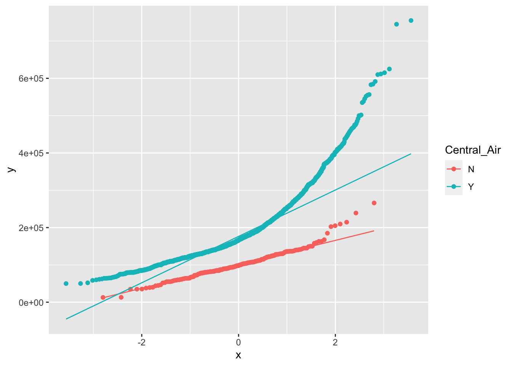
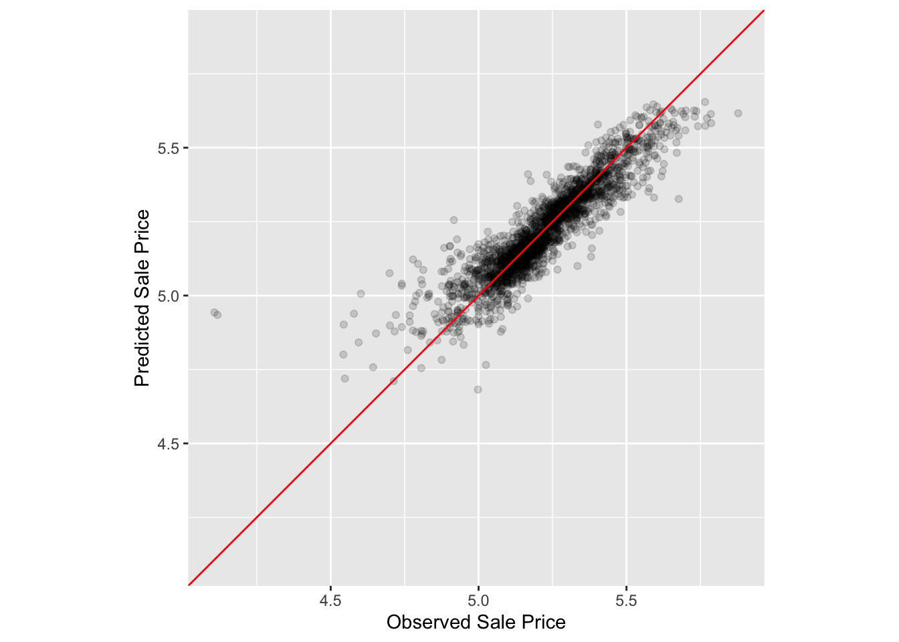

library(tidymodels)Introduction to ‘tidymodels’ metapackage for Machine Learning
Libraries and data
Load the main library.
Make sure conflicts are handled by tidymodels
tidymodels_prefer(quiet = T)Load the data Ames housing data (which some say is the new iris!) from ‘modeldata’ package.
library(modeldata) # This is also loaded by the tidymodels package
data(ames)
dim(ames)[1] 2930 74Lets explore the data set.
glimpse(ames)GOAL: Using various other features of houses, we would like to predict the sale price. Since we do have all sale prices in the data, this will be supervised regression algorithm.
EDA
Distribution of the outcome and log-transformed outcome.
# outcome
ames %>%
ggplot(aes(x = Sale_Price)) +
geom_histogram(aes(y = ..density..),
bins = 50,
col= "white") +
xlab('Sale Prices ($)') +
geom_density(lwd = 1.5,
linetype = 1,
colour = 2)# log-outcome
ames %>%
ggplot(aes(x = Sale_Price)) +
geom_histogram(aes(y = ..density..),
bins = 50,
col= "white") +
scale_x_log10() +
xlab('Log - Sale Prices ($)') +
geom_density(lwd = 1.5,
linetype = 1,
colour = 2)Distribution of sale prices depending whether there is a central air or not.
ames %>%
ggplot(aes(x = Sale_Price)) +
geom_histogram(aes(y = ..density..),
bins = 50,
col= "white") +
facet_wrap(~Central_Air) +
xlab('Sale Prices ($)') +
geom_density(lwd = 1.5,
linetype = 1,
colour = 2)
Distribution of log-transforemed sale prices depending whether there is a central air or not.
ames %>%
ggplot(aes(x = Sale_Price)) +
geom_histogram(aes(y = ..density..),
bins = 20,
col= "white") +
scale_x_log10() +
facet_wrap(~Central_Air) +
xlab('Sale Prices ($)') +
geom_density(lwd = 1.5,
linetype = 1,
colour = 2)Is the outcome normal? Is the log-outcome normal?
ames %>%
ggplot(aes(sample = Sale_Price))+
stat_qq() +
stat_qq_line()
ames %>%
mutate(Sale_Price = log(Sale_Price)) %>%
ggplot(aes(sample = Sale_Price))+
stat_qq() +
stat_qq_line()
We could also investigate quantile-quantile plot for the sale price and its transformed version for each level of a categorical variable such as whether there is a central air or not in the house.
ames %>%
ggplot(aes(sample = Sale_Price, color = Central_Air))+
stat_qq() +
stat_qq_line()
ames %>%
mutate(Sale_Price = log(Sale_Price)) %>%
ggplot(aes(sample = Sale_Price, color = Central_Air))+
stat_qq() +
stat_qq_line()Since log-outcome is more symmetric, particularly in the middle regime, so we will use the transformed sale prices as our new outcome for the rest of the project.
ames <-
ames %>%
mutate(Sale_Price = log10(Sale_Price))Lets look at geography of the houses. Here we look at the scatterplot of latitude vs longitude, meaning exact physical location.
ames %>%
select(Neighborhood, Longitude, Latitude) %>%
ggplot(aes(x = Longitude,
y = Latitude,
color = Neighborhood)) +
geom_point() +
theme(legend.position="bottom")There is a huge gap in the middle that corresponds to Iowa University. Look at regions Northridge and Somerset closely.
ames %>%
select(Neighborhood, Longitude, Latitude) %>%
filter(Neighborhood == 'Northridge' | Neighborhood == 'Somerset') %>%
ggplot(aes(x = Longitude,
y = Latitude,
color = Neighborhood)) +
geom_point() +
theme(legend.position="bottom")Look at Crawford.
ames %>%
select(Neighborhood, Longitude, Latitude) %>%
filter(Neighborhood == 'Crawford') %>%
ggplot(aes(x = Longitude,
y = Latitude,
color = Neighborhood)) +
geom_point() +
theme(legend.position="none")
Crawford has this isolated small cluster all the way in south-east. Look at railroad neighborhood.
ames %>%
select(Neighborhood, Longitude, Latitude) %>%
filter(Neighborhood == 'Iowa_DOT_and_Rail_Road') %>%
ggplot(aes(x = Longitude,
y = Latitude,
color = Neighborhood)) +
geom_point() +
theme(legend.position="none")Railroad neighborhood has houses in east and south east that is far away from everyone else.
Data spending (budget)
Lets split the data using stratified sampling where strata are coming from the sale prices, outcome we like to predict.
set.seed(2022)
ames_split <- initial_split(ames,
prop = 0.80,
strata = Sale_Price)
ames_split<Training/Testing/Total>
<2342/588/2930>What is this new split object?
typeof(ames_split)[1] "list"class(ames_split)[1] "initial_split" "mc_split" "rsplit" It is an ‘rsplit’ object. Keep that in mind. We can use tidy function on it.
tidy(ames_split)# A tibble: 2,930 × 2
Row Data
<int> <chr>
1 1 Analysis
2 2 Analysis
3 3 Analysis
4 4 Analysis
5 5 Analysis
6 6 Analysis
7 7 Analysis
8 8 Analysis
9 9 Analysis
10 10 Analysis
# … with 2,920 more rows
# ℹ Use `print(n = ...)` to see more rowsLets use the rsplit object to actually get the split data.
ames_train <- training(ames_split)
ames_test <- testing(ames_split)
dim(ames_train)[1] 2342 74dim(ames_test)[1] 588 74ames_split<Training/Testing/Total>
<2342/588/2930>Modeling with parsnip
We will fit a linear model to predict sale price of a property as function of only two variables: longitude and latitude.
First, we setup the model specifications.
lm_model <-
linear_reg() %>%
set_engine('lm')
lm_modelLinear Regression Model Specification (regression)
Computational engine: lm Then, we fit it using my favorite interface, the formula (\(y\) vs \(x\))!
lm_form_fit <-
lm_model %>%
fit(Sale_Price~Longitude + Latitude,
data = ames_train)
lm_form_fitparsnip model object
Call:
stats::lm(formula = Sale_Price ~ Longitude + Latitude, data = data)
Coefficients:
(Intercept) Longitude Latitude
-301.956 -2.073 2.689 tidy(lm_form_fit)# A tibble: 3 × 5
term estimate std.error statistic p.value
<chr> <dbl> <dbl> <dbl> <dbl>
1 (Intercept) -302. 14.6 -20.7 2.56e-87
2 Longitude -2.07 0.131 -15.9 7.99e-54
3 Latitude 2.69 0.182 14.8 3.26e-47Or, we can do the same thing with predictors separate from the outcome, \(x/y\) interface.
lm_xy_fit <-
lm_model %>%
fit_xy(x = ames_train %>% select(Longitude, Latitude),
y = ames_train %>% pull(Sale_Price))
lm_xy_fitparsnip model object
Call:
stats::lm(formula = ..y ~ ., data = data)
Coefficients:
(Intercept) Longitude Latitude
-301.956 -2.073 2.689 tidy(lm_xy_fit)# A tibble: 3 × 5
term estimate std.error statistic p.value
<chr> <dbl> <dbl> <dbl> <dbl>
1 (Intercept) -302. 14.6 -20.7 2.56e-87
2 Longitude -2.07 0.131 -15.9 7.99e-54
3 Latitude 2.69 0.182 14.8 3.26e-47Admittedly, one can do it all in one chunk. But separation makes the whole modeling process more modular.
lm_form_fit_tidy <-
linear_reg() %>%
set_engine('lm') %>%
fit(Sale_Price~Longitude + Latitude,
data = ames_train) %>%
tidy()
lm_form_fit_tidy# A tibble: 3 × 5
term estimate std.error statistic p.value
<chr> <dbl> <dbl> <dbl> <dbl>
1 (Intercept) -302. 14.6 -20.7 2.56e-87
2 Longitude -2.07 0.131 -15.9 7.99e-54
3 Latitude 2.69 0.182 14.8 3.26e-47Obtaining the results
Fitted object is a parsnip object, and we might want to extract other info from it.
# extract the fit model
lm_form_fit %>%
extract_fit_engine()
Call:
stats::lm(formula = Sale_Price ~ Longitude + Latitude, data = data)
Coefficients:
(Intercept) Longitude Latitude
-301.956 -2.073 2.689 Summary.
# extract the summmary of the model
lm_form_fit %>%
extract_fit_engine() %>%
summary()
Call:
stats::lm(formula = Sale_Price ~ Longitude + Latitude, data = data)
Residuals:
Min 1Q Median 3Q Max
-1.02743 -0.09898 -0.01601 0.09858 0.58095
Coefficients:
Estimate Std. Error t value Pr(>|t|)
(Intercept) -301.9558 14.6081 -20.67 <2e-16 ***
Longitude -2.0731 0.1308 -15.85 <2e-16 ***
Latitude 2.6894 0.1822 14.76 <2e-16 ***
---
Signif. codes: 0 '***' 0.001 '**' 0.01 '*' 0.05 '.' 0.1 ' ' 1
Residual standard error: 0.1631 on 2339 degrees of freedom
Multiple R-squared: 0.1636, Adjusted R-squared: 0.1629
F-statistic: 228.8 on 2 and 2339 DF, p-value: < 2.2e-16But probably the best way to look at the coefficients and their statistics, is to use tidy().
tidy(lm_form_fit)# A tibble: 3 × 5
term estimate std.error statistic p.value
<chr> <dbl> <dbl> <dbl> <dbl>
1 (Intercept) -302. 14.6 -20.7 2.56e-87
2 Longitude -2.07 0.131 -15.9 7.99e-54
3 Latitude 2.69 0.182 14.8 3.26e-47Predictions
Lets make some predictions. First, slice the first 5 rows of the test set.
ames_test_small <-
ames_test %>%
slice(1:5)
ames_test_small# A tibble: 5 × 74
MS_SubC…¹ MS_Zo…² Lot_F…³ Lot_A…⁴ Street Alley Lot_S…⁵ Land_…⁶ Utili…⁷ Lot_C…⁸
<fct> <fct> <dbl> <int> <fct> <fct> <fct> <fct> <fct> <fct>
1 Two_Stor… Reside… 75 10000 Pave No_A… Slight… Lvl AllPub Corner
2 Two_Stor… Reside… 63 8402 Pave No_A… Slight… Lvl AllPub Inside
3 Split_Fo… Reside… 85 10625 Pave No_A… Regular Lvl AllPub Inside
4 One_Stor… Reside… 65 8450 Pave No_A… Regular Lvl AllPub Inside
5 Two_Stor… Reside… 21 1680 Pave No_A… Regular Lvl AllPub Inside
# … with 64 more variables: Land_Slope <fct>, Neighborhood <fct>,
# Condition_1 <fct>, Condition_2 <fct>, Bldg_Type <fct>, House_Style <fct>,
# Overall_Cond <fct>, Year_Built <int>, Year_Remod_Add <int>,
# Roof_Style <fct>, Roof_Matl <fct>, Exterior_1st <fct>, Exterior_2nd <fct>,
# Mas_Vnr_Type <fct>, Mas_Vnr_Area <dbl>, Exter_Cond <fct>, Foundation <fct>,
# Bsmt_Cond <fct>, Bsmt_Exposure <fct>, BsmtFin_Type_1 <fct>,
# BsmtFin_SF_1 <dbl>, BsmtFin_Type_2 <fct>, BsmtFin_SF_2 <dbl>, …
# ℹ Use `colnames()` to see all variable namesNow make predictions.
predict(object = lm_form_fit,
new_data = ames_test_small)# A tibble: 5 × 1
.pred
<dbl>
1 5.27
2 5.27
3 5.25
4 5.25
5 5.23Lets merge these new predictions with the original data.
ames_test_small %>%
select(Sale_Price) %>%
bind_cols(predict(lm_form_fit,
ames_test_small)) # A tibble: 5 × 2
Sale_Price .pred
<dbl> <dbl>
1 5.25 5.27
2 5.26 5.27
3 5.23 5.25
4 5.15 5.25
5 4.98 5.23We could now examine how well we did in those predictions, plot the preecited values versus the observed values and more.
But for a second, imagine that instead of linear regression model, we would like to fit a decision tree. Look how the modeling process change below.
tree_model <- ##### ONLY DIFFERNCES ARE IN MODEL SPECIFICATIONS
decision_tree(min_n = 2) %>%
set_engine("rpart") %>%
set_mode("regression")
tree_fit <-
tree_model %>%
fit(Sale_Price ~ Longitude + Latitude,
data = ames_train)
ames_test_small %>%
select(Sale_Price) %>%
bind_cols(predict(tree_fit,
ames_test_small)) # A tibble: 5 × 2
Sale_Price .pred
<dbl> <dbl>
1 5.25 5.31
2 5.26 5.31
3 5.23 5.31
4 5.15 5.15
5 4.98 5.15That is, there is only model specification changes. The rest is the same. That uniformity in the modeling for various algorithms is the true power of tidymodels.
Model WORKFLOW
Create model specifications and add it to the workflow.
lm_model <-
linear_reg() %>%
set_engine("lm")
lm_wflow <-
workflow() %>%
add_model(lm_model)
lm_wflow══ Workflow ════════════════════════════════════════════════════════════════════
Preprocessor: None
Model: linear_reg()
── Model ───────────────────────────────────────────────────────────────────────
Linear Regression Model Specification (regression)
Computational engine: lm Add preprocessor.
lm_wflow <-
lm_wflow %>%
add_formula(Sale_Price ~ Longitude + Latitude)
lm_wflow══ Workflow ════════════════════════════════════════════════════════════════════
Preprocessor: Formula
Model: linear_reg()
── Preprocessor ────────────────────────────────────────────────────────────────
Sale_Price ~ Longitude + Latitude
── Model ───────────────────────────────────────────────────────────────────────
Linear Regression Model Specification (regression)
Computational engine: lm Now fit.
lm_fit <-
fit(object = lm_wflow,
data = ames_train)
lm_fit══ Workflow [trained] ══════════════════════════════════════════════════════════
Preprocessor: Formula
Model: linear_reg()
── Preprocessor ────────────────────────────────────────────────────────────────
Sale_Price ~ Longitude + Latitude
── Model ───────────────────────────────────────────────────────────────────────
Call:
stats::lm(formula = ..y ~ ., data = data)
Coefficients:
(Intercept) Longitude Latitude
-301.956 -2.073 2.689 tidy(lm_fit)# A tibble: 3 × 5
term estimate std.error statistic p.value
<chr> <dbl> <dbl> <dbl> <dbl>
1 (Intercept) -302. 14.6 -20.7 2.56e-87
2 Longitude -2.07 0.131 -15.9 7.99e-54
3 Latitude 2.69 0.182 14.8 3.26e-47Make predictions on TRAINED WORKFLOW.
predict(object = lm_fit,
new_data = ames_test %>% slice(1:5))# A tibble: 5 × 1
.pred
<dbl>
1 5.27
2 5.27
3 5.25
4 5.25
5 5.23What if we would like to look at more than one model/preprocessor?
We use WORKFLOWSETS! We define various formulas that we are interested in.
location <- list(
longitude = Sale_Price ~ Longitude,
latitude = Sale_Price ~ Latitude,
coords = Sale_Price ~ Longitude + Latitude,
neighborhood = Sale_Price ~ Neighborhood
)
location$longitude
Sale_Price ~ Longitude
$latitude
Sale_Price ~ Latitude
$coords
Sale_Price ~ Longitude + Latitude
$neighborhood
Sale_Price ~ NeighborhoodThen use workflowsets package.
library(workflowsets)
location_models <- workflow_set(preproc = location,
models = list(lm = lm_model))
location_models# A workflow set/tibble: 4 × 4
wflow_id info option result
<chr> <list> <list> <list>
1 longitude_lm <tibble [1 × 4]> <opts[0]> <list [0]>
2 latitude_lm <tibble [1 × 4]> <opts[0]> <list [0]>
3 coords_lm <tibble [1 × 4]> <opts[0]> <list [0]>
4 neighborhood_lm <tibble [1 × 4]> <opts[0]> <list [0]>This is a tibble that contains multiple column-lists. Lets look into one.
location_models$info[[1]]# A tibble: 1 × 4
workflow preproc model comment
<list> <chr> <chr> <chr>
1 <workflow> formula linear_reg "" Even this one is a tibble with column-list. Lets dive in further to see the workflow.
location_models$info[[3]][[1]][[1]]
══ Workflow ════════════════════════════════════════════════════════════════════
Preprocessor: Formula
Model: linear_reg()
── Preprocessor ────────────────────────────────────────────────────────────────
Sale_Price ~ Longitude + Latitude
── Model ───────────────────────────────────────────────────────────────────────
Linear Regression Model Specification (regression)
Computational engine: lm There is an easier way to get to the specific workflow using the following function.
extract_workflow(x = location_models,
id = "coords_lm")══ Workflow ════════════════════════════════════════════════════════════════════
Preprocessor: Formula
Model: linear_reg()
── Preprocessor ────────────────────────────────────────────────────────────────
Sale_Price ~ Longitude + Latitude
── Model ───────────────────────────────────────────────────────────────────────
Linear Regression Model Specification (regression)
Computational engine: lm Let’s create model fits for each formula and save them in a new column called fit. We’ll use basic dplyr and purrr operations.
location_models <-
location_models %>%
mutate(fit = map(info, ~ fit(.x$workflow[[1]],
ames_train)))
location_models# A workflow set/tibble: 4 × 5
wflow_id info option result fit
<chr> <list> <list> <list> <list>
1 longitude_lm <tibble [1 × 4]> <opts[0]> <list [0]> <workflow>
2 latitude_lm <tibble [1 × 4]> <opts[0]> <list [0]> <workflow>
3 coords_lm <tibble [1 × 4]> <opts[0]> <list [0]> <workflow>
4 neighborhood_lm <tibble [1 × 4]> <opts[0]> <list [0]> <workflow>location_models$fit[[1]]══ Workflow [trained] ══════════════════════════════════════════════════════════
Preprocessor: Formula
Model: linear_reg()
── Preprocessor ────────────────────────────────────────────────────────────────
Sale_Price ~ Longitude
── Model ───────────────────────────────────────────────────────────────────────
Call:
stats::lm(formula = ..y ~ ., data = data)
Coefficients:
(Intercept) Longitude
-184.340 -2.024
Assume that we have concluded our model selection and have a final model. last_fit() function will fit the chosen model to the whole training set (meaning, either validation or resamples from cross validations are joined), and then evaluate the model on the testing set. For that, we need to provide the chosen model/workflow and the original split which is an rsplit object.
final_lm_res <- last_fit(object = lm_wflow,
split = ames_split)
final_lm_res# Resampling results
# Manual resampling
# A tibble: 1 × 6
splits id .metrics .notes .predictions .workflow
<list> <chr> <list> <list> <list> <list>
1 <split [2342/588]> train/test split <tibble> <tibble> <tibble> <workflow>Extract the workflow from previous tibble that has column-lists.
fitted_lm_wflow <- extract_workflow(final_lm_res)
fitted_lm_wflow══ Workflow [trained] ══════════════════════════════════════════════════════════
Preprocessor: Formula
Model: linear_reg()
── Preprocessor ────────────────────────────────────────────────────────────────
Sale_Price ~ Longitude + Latitude
── Model ───────────────────────────────────────────────────────────────────────
Call:
stats::lm(formula = ..y ~ ., data = data)
Coefficients:
(Intercept) Longitude Latitude
-301.956 -2.073 2.689 Look at performance metrics and make predictions on the test data.
# metrics
collect_metrics(final_lm_res)# A tibble: 2 × 4
.metric .estimator .estimate .config
<chr> <chr> <dbl> <chr>
1 rmse standard 0.153 Preprocessor1_Model1
2 rsq standard 0.212 Preprocessor1_Model1# predictions
collect_predictions(final_lm_res) %>%
slice(1:5)# A tibble: 5 × 5
id .pred .row Sale_Price .config
<chr> <dbl> <int> <dbl> <chr>
1 train/test split 5.27 11 5.25 Preprocessor1_Model1
2 train/test split 5.27 13 5.26 Preprocessor1_Model1
3 train/test split 5.25 22 5.23 Preprocessor1_Model1
4 train/test split 5.25 26 5.15 Preprocessor1_Model1
5 train/test split 5.23 30 4.98 Preprocessor1_Model1Admittedly, metrics do not look great for the testing data.
Using RECIPE package for preprosessing/feature engineering
simple_ames <-
recipe(Sale_Price ~ Neighborhood + Gr_Liv_Area + Year_Built + Bldg_Type,
data = ames_train) %>%
step_log(Gr_Liv_Area, base = 10) %>%
step_dummy(all_nominal_predictors())
simple_amesRecipe
Inputs:
role #variables
outcome 1
predictor 4
Operations:
Log transformation on Gr_Liv_Area
Dummy variables from all_nominal_predictors()Add recipe we just created to the lm_wflow, but make sure you remove the old formula/variables so that recipe can have its own formula.
lm_wflow <-
lm_wflow %>%
remove_formula() %>%
add_recipe(simple_ames)
lm_wflow══ Workflow ════════════════════════════════════════════════════════════════════
Preprocessor: Recipe
Model: linear_reg()
── Preprocessor ────────────────────────────────────────────────────────────────
2 Recipe Steps
• step_log()
• step_dummy()
── Model ───────────────────────────────────────────────────────────────────────
Linear Regression Model Specification (regression)
Computational engine: lm Now we fit.
lm_fit <- fit(object = lm_wflow,
data = ames_train)
print(tidy(lm_fit), n = 10)# A tibble: 35 × 5
term estimate std.error statistic p.value
<chr> <dbl> <dbl> <dbl> <dbl>
1 (Intercept) -1.22 0.234 -5.21 2.00e- 7
2 Gr_Liv_Area 0.662 0.0144 46.0 0
3 Year_Built 0.00221 0.000118 18.8 3.61e-73
4 Neighborhood_College_Creek 0.00832 0.00837 0.994 3.20e- 1
5 Neighborhood_Old_Town -0.0243 0.00842 -2.89 3.91e- 3
6 Neighborhood_Edwards -0.0432 0.00773 -5.60 2.43e- 8
7 Neighborhood_Somerset 0.0406 0.00983 4.14 3.65e- 5
8 Neighborhood_Northridge_Heights 0.121 0.0103 11.8 3.76e-31
9 Neighborhood_Gilbert -0.0409 0.00965 -4.24 2.32e- 5
10 Neighborhood_Sawyer 0.000693 0.00832 0.0833 9.34e- 1
# … with 25 more rows
# ℹ Use `print(n = ...)` to see more rowsWe predict using test data, but note that predict automatically uses the same transformations from the training data on the test data.
predict(object = lm_fit,
new_data = ames_test %>% slice(1:3))Warning in predict.lm(object = object$fit, newdata = new_data, type =
"response"): prediction from a rank-deficient fit may be misleading# A tibble: 3 × 1
.pred
<dbl>
1 5.27
2 5.25
3 5.17Extract fitted/trained recipe.
lm_fit %>%
extract_recipe(estimated = T)Recipe
Inputs:
role #variables
outcome 1
predictor 4
Training data contained 2342 data points and no missing data.
Operations:
Log transformation on Gr_Liv_Area [trained]
Dummy variables from Neighborhood, Bldg_Type [trained]Extract tidy summary.
lm_fit %>%
# This returns the parsnip object:
extract_fit_parsnip() %>%
# Now tidy the linear model object:
tidy() %>%
slice(1:5)# A tibble: 5 × 5
term estimate std.error statistic p.value
<chr> <dbl> <dbl> <dbl> <dbl>
1 (Intercept) -1.22 0.234 -5.21 2.00e- 7
2 Gr_Liv_Area 0.662 0.0144 46.0 0
3 Year_Built 0.00221 0.000118 18.8 3.61e-73
4 Neighborhood_College_Creek 0.00832 0.00837 0.994 3.20e- 1
5 Neighborhood_Old_Town -0.0243 0.00842 -2.89 3.91e- 3What to do with categorical variables?
ames %>%
ggplot(aes(x = Neighborhood)) +
geom_bar() +
coord_flip()Lets add the bottom 1% of the cases into single factor called ‘other’.
simple_ames <-
recipe(Sale_Price ~ Neighborhood + Gr_Liv_Area + Year_Built + Bldg_Type,
data = ames_train) %>%
step_log(Gr_Liv_Area, base = 10) %>%
step_other(Neighborhood, threshold = 0.01) %>%
step_dummy(all_nominal_predictors())
simple_amesRecipe
Inputs:
role #variables
outcome 1
predictor 4
Operations:
Log transformation on Gr_Liv_Area
Collapsing factor levels for Neighborhood
Dummy variables from all_nominal_predictors()Interactions?
ggplot(ames_train, aes(x = Gr_Liv_Area, y = 10^Sale_Price)) +
geom_point(alpha = .2) +
facet_wrap(~ Bldg_Type) +
geom_smooth(method = lm, formula = y ~ x, se = FALSE, color = "lightblue") +
scale_x_log10() +
scale_y_log10() +
labs(x = "Gross Living Area", y = "Sale Price (USD)")Lets add interaction between Gross Living Area and Building type. First, create dummies and then add interactions. Not the other way around like in base R.
ames_rec <-
recipe(Sale_Price ~ Neighborhood + Gr_Liv_Area + Year_Built + Bldg_Type +
Latitude + Longitude, data = ames_train) %>%
step_log(Gr_Liv_Area, base = 10) %>%
step_other(Neighborhood, threshold = 0.01, id = "my_id") %>%
step_dummy(all_nominal_predictors()) %>%
step_interact( ~ Gr_Liv_Area:starts_with("Bldg_Type_") ) %>%
step_ns(Latitude, Longitude, deg_free = 20)
tidy(simple_ames)# A tibble: 3 × 6
number operation type trained skip id
<int> <chr> <chr> <lgl> <lgl> <chr>
1 1 step log FALSE FALSE log_m9UZR
2 2 step other FALSE FALSE other_Xe9DH
3 3 step dummy FALSE FALSE dummy_kTP2ZFit again using new recipe.
lm_wflow <-
workflow() %>%
add_model(spec = lm_model) %>%
add_recipe(recipe = ames_rec)
lm_fit <- fit(object = lm_wflow,
data = ames_train)
tidy(lm_fit)# A tibble: 72 × 5
term estimate std.error statistic p.value
<chr> <dbl> <dbl> <dbl> <dbl>
1 (Intercept) -0.757 0.297 -2.55 1.08e- 2
2 Gr_Liv_Area 0.668 0.0157 42.5 3.53e-291
3 Year_Built 0.00200 0.000138 14.5 1.89e- 45
4 Neighborhood_College_Creek -0.0177 0.0328 -0.541 5.89e- 1
5 Neighborhood_Old_Town -0.0445 0.0124 -3.59 3.33e- 4
6 Neighborhood_Edwards -0.0630 0.0269 -2.34 1.92e- 2
7 Neighborhood_Somerset 0.0700 0.0190 3.68 2.38e- 4
8 Neighborhood_Northridge_Heights 0.129 0.0272 4.76 2.11e- 6
9 Neighborhood_Gilbert 0.0215 0.0214 1.00 3.16e- 1
10 Neighborhood_Sawyer -0.0832 0.0256 -3.25 1.15e- 3
# … with 62 more rows
# ℹ Use `print(n = ...)` to see more rowsMetrics
ames_test_res <- predict(object = lm_fit,
new_data = ames_test %>% select(-Sale_Price))
ames_test_res# A tibble: 588 × 1
.pred
<dbl>
1 5.26
2 5.25
3 5.13
4 5.16
5 4.99
6 5.49
7 5.43
8 5.56
9 5.46
10 5.36
# … with 578 more rows
# ℹ Use `print(n = ...)` to see more rowsBind predictions with observed values.
ames_test_res <- bind_cols(ames_test_res, ames_test %>% select(Sale_Price))
ames_test_res# A tibble: 588 × 2
.pred Sale_Price
<dbl> <dbl>
1 5.26 5.25
2 5.25 5.26
3 5.13 5.23
4 5.16 5.15
5 4.99 4.98
6 5.49 5.49
7 5.43 5.34
8 5.56 5.51
9 5.46 5.51
10 5.36 5.31
# … with 578 more rows
# ℹ Use `print(n = ...)` to see more rowsPlot the predictions versus observations.
ames_test_res %>%
ggplot(aes(x = Sale_Price, y = .pred)) +
geom_point(size = 2, alpha = 0.5) +
geom_abline(lty = 2) +
labs(x = 'Sale Price (log10)',
y = 'Predicted Price (log10)',
title = 'Does predictions match with reality?') +
coord_obs_pred()Calculate Root Mean Square Error.
y = ames_test_res$Sale_Price
yhat = ames_test_res$.pred
rmse = sqrt(mean((y-yhat)^2))
rmse[1] 0.0745144OR use the function.
# rsme_vec
rmse_vec(truth = y,
estimate = yhat)[1] 0.0745144# rmse
rmse(data = ames_test_res,
truth = Sale_Price,
estimate = .pred)# A tibble: 1 × 3
.metric .estimator .estimate
<chr> <chr> <dbl>
1 rmse standard 0.0745# tidyverse dialect
ames_test_res %>%
rmse(Sale_Price, .pred)# A tibble: 1 × 3
.metric .estimator .estimate
<chr> <chr> <dbl>
1 rmse standard 0.0745Multiple metrics, all at once.
ames_metrics <- metric_set(yardstick::rmse,
yardstick::rsq,
yardstick::mae,
yardstick::ccc)
ames_metrics(ames_test_res,
truth = Sale_Price,
estimate = .pred)# A tibble: 4 × 3
.metric .estimator .estimate
<chr> <chr> <dbl>
1 rmse standard 0.0745
2 rsq standard 0.816
3 mae standard 0.0534
4 ccc standard 0.903 Resampling: v-fold Cross Validation
set.seed(123)
ames_folds <- vfold_cv(data = ames_train,
v = 10)
ames_folds# 10-fold cross-validation
# A tibble: 10 × 2
splits id
<list> <chr>
1 <split [2107/235]> Fold01
2 <split [2107/235]> Fold02
3 <split [2108/234]> Fold03
4 <split [2108/234]> Fold04
5 <split [2108/234]> Fold05
6 <split [2108/234]> Fold06
7 <split [2108/234]> Fold07
8 <split [2108/234]> Fold08
9 <split [2108/234]> Fold09
10 <split [2108/234]> Fold10class(ames_folds)[1] "vfold_cv" "rset" "tbl_df" "tbl" "data.frame"Note that created object is a tibble with a column-list. Dive in.
ames_folds$splits[[1]]<Analysis/Assess/Total>
<2107/235/2342>This object is both rsplit object as well as vfold_split object. One can apply analysis or assessment function to get to the resampled data.
analysis(ames_folds$splits[[1]])# A tibble: 2,107 × 74
MS_Sub…¹ MS_Zo…² Lot_F…³ Lot_A…⁴ Street Alley Lot_S…⁵ Land_…⁶ Utili…⁷ Lot_C…⁸
<fct> <fct> <dbl> <int> <fct> <fct> <fct> <fct> <fct> <fct>
1 One_Sto… Reside… 80 11622 Pave No_A… Regular Lvl AllPub Inside
2 One_Sto… Reside… 70 8400 Pave No_A… Regular Lvl AllPub Corner
3 One_Sto… Reside… 70 10500 Pave No_A… Regular Lvl AllPub FR2
4 Two_Sto… Reside… 21 1680 Pave No_A… Regular Lvl AllPub Inside
5 Two_Sto… Reside… 21 1680 Pave No_A… Regular Lvl AllPub Inside
6 One_Sto… Reside… 53 4043 Pave No_A… Regular Lvl AllPub Inside
7 One_Sto… Reside… 24 2280 Pave No_A… Regular Lvl AllPub FR2
8 One_Sto… Reside… 55 7892 Pave No_A… Regular Lvl AllPub Inside
9 One_Sto… Reside… 50 7175 Pave No_A… Regular Lvl AllPub Inside
10 One_Sto… Reside… 70 9800 Pave No_A… Regular Lvl AllPub Corner
# … with 2,097 more rows, 64 more variables: Land_Slope <fct>,
# Neighborhood <fct>, Condition_1 <fct>, Condition_2 <fct>, Bldg_Type <fct>,
# House_Style <fct>, Overall_Cond <fct>, Year_Built <int>,
# Year_Remod_Add <int>, Roof_Style <fct>, Roof_Matl <fct>,
# Exterior_1st <fct>, Exterior_2nd <fct>, Mas_Vnr_Type <fct>,
# Mas_Vnr_Area <dbl>, Exter_Cond <fct>, Foundation <fct>, Bsmt_Cond <fct>,
# Bsmt_Exposure <fct>, BsmtFin_Type_1 <fct>, BsmtFin_SF_1 <dbl>, …
# ℹ Use `print(n = ...)` to see more rows, and `colnames()` to see all variable namesOr using tidyverse dialect:
ames_folds$splits[[1]] %>%
analysis()# A tibble: 2,107 × 74
MS_Sub…¹ MS_Zo…² Lot_F…³ Lot_A…⁴ Street Alley Lot_S…⁵ Land_…⁶ Utili…⁷ Lot_C…⁸
<fct> <fct> <dbl> <int> <fct> <fct> <fct> <fct> <fct> <fct>
1 One_Sto… Reside… 80 11622 Pave No_A… Regular Lvl AllPub Inside
2 One_Sto… Reside… 70 8400 Pave No_A… Regular Lvl AllPub Corner
3 One_Sto… Reside… 70 10500 Pave No_A… Regular Lvl AllPub FR2
4 Two_Sto… Reside… 21 1680 Pave No_A… Regular Lvl AllPub Inside
5 Two_Sto… Reside… 21 1680 Pave No_A… Regular Lvl AllPub Inside
6 One_Sto… Reside… 53 4043 Pave No_A… Regular Lvl AllPub Inside
7 One_Sto… Reside… 24 2280 Pave No_A… Regular Lvl AllPub FR2
8 One_Sto… Reside… 55 7892 Pave No_A… Regular Lvl AllPub Inside
9 One_Sto… Reside… 50 7175 Pave No_A… Regular Lvl AllPub Inside
10 One_Sto… Reside… 70 9800 Pave No_A… Regular Lvl AllPub Corner
# … with 2,097 more rows, 64 more variables: Land_Slope <fct>,
# Neighborhood <fct>, Condition_1 <fct>, Condition_2 <fct>, Bldg_Type <fct>,
# House_Style <fct>, Overall_Cond <fct>, Year_Built <int>,
# Year_Remod_Add <int>, Roof_Style <fct>, Roof_Matl <fct>,
# Exterior_1st <fct>, Exterior_2nd <fct>, Mas_Vnr_Type <fct>,
# Mas_Vnr_Area <dbl>, Exter_Cond <fct>, Foundation <fct>, Bsmt_Cond <fct>,
# Bsmt_Exposure <fct>, BsmtFin_Type_1 <fct>, BsmtFin_SF_1 <dbl>, …
# ℹ Use `print(n = ...)` to see more rows, and `colnames()` to see all variable namesJUST VALIDATION
set.seed(1002)
val_set <- validation_split(data = ames_train,
prop = 3/4)
val_set# Validation Set Split (0.75/0.25)
# A tibble: 1 × 2
splits id
<list> <chr>
1 <split [1756/586]> validationclass(val_set)[1] "validation_split" "rset" "tbl_df" "tbl"
[5] "data.frame" val_set$splits[[1]]<Training/Validation/Total>
<1756/586/2342>Bootstrap sampling
set.seed(2022)
boot_samples <- bootstraps(data = ames_train,
times = 5)
assessment(boot_samples$splits[[1]])# A tibble: 847 × 74
MS_Sub…¹ MS_Zo…² Lot_F…³ Lot_A…⁴ Street Alley Lot_S…⁵ Land_…⁶ Utili…⁷ Lot_C…⁸
<fct> <fct> <dbl> <int> <fct> <fct> <fct> <fct> <fct> <fct>
1 One_Sto… Reside… 70 8400 Pave No_A… Regular Lvl AllPub Corner
2 Two_Sto… Reside… 21 1680 Pave No_A… Regular Lvl AllPub Inside
3 One_Sto… Reside… 53 4043 Pave No_A… Regular Lvl AllPub Inside
4 One_Sto… Reside… 24 2280 Pave No_A… Regular Lvl AllPub FR2
5 Duplex_… Reside… 68 8930 Pave No_A… Regular Lvl AllPub Inside
6 Duplex_… Reside… 98 13260 Pave No_A… Slight… Lvl AllPub Inside
7 One_Sto… Reside… 80 9920 Pave No_A… Regular Lvl AllPub Inside
8 Two_Fam… Reside… 70 13587 Pave No_A… Regular Lvl AllPub Inside
9 One_Sto… Reside… 68 7922 Pave No_A… Regular Lvl AllPub Inside
10 One_Sto… Reside… 65 7898 Pave No_A… Regular Lvl AllPub Corner
# … with 837 more rows, 64 more variables: Land_Slope <fct>,
# Neighborhood <fct>, Condition_1 <fct>, Condition_2 <fct>, Bldg_Type <fct>,
# House_Style <fct>, Overall_Cond <fct>, Year_Built <int>,
# Year_Remod_Add <int>, Roof_Style <fct>, Roof_Matl <fct>,
# Exterior_1st <fct>, Exterior_2nd <fct>, Mas_Vnr_Type <fct>,
# Mas_Vnr_Area <dbl>, Exter_Cond <fct>, Foundation <fct>, Bsmt_Cond <fct>,
# Bsmt_Exposure <fct>, BsmtFin_Type_1 <fct>, BsmtFin_SF_1 <dbl>, …
# ℹ Use `print(n = ...)` to see more rows, and `colnames()` to see all variable namesclass(boot_samples$splits[[1]])[1] "boot_split" "rsplit" Estimating model performances using resampling
First lets fit a random forest model.
rf_model <-
rand_forest(trees = 1000) %>%
set_engine("ranger") %>%
set_mode("regression")
rf_wflow <-
workflow() %>%
add_formula( Sale_Price ~ Neighborhood + Gr_Liv_Area + Year_Built + Bldg_Type +
Latitude + Longitude) %>%
add_model(rf_model)
rf_fit <-
rf_wflow %>%
fit(data = ames_train)Now we fit resamples.
keep_pred <- control_resamples(save_pred = TRUE,
save_workflow = TRUE)
set.seed(234)
doParallel::registerDoParallel() # lets parallelize the computation
rf_res <-
rf_wflow %>%
fit_resamples(resamples = ames_folds,
control = keep_pred)
rf_res# Resampling results
# 10-fold cross-validation
# A tibble: 10 × 5
splits id .metrics .notes .predictions
<list> <chr> <list> <list> <list>
1 <split [2107/235]> Fold01 <tibble [2 × 4]> <tibble [0 × 3]> <tibble>
2 <split [2107/235]> Fold02 <tibble [2 × 4]> <tibble [0 × 3]> <tibble>
3 <split [2108/234]> Fold03 <tibble [2 × 4]> <tibble [0 × 3]> <tibble>
4 <split [2108/234]> Fold04 <tibble [2 × 4]> <tibble [0 × 3]> <tibble>
5 <split [2108/234]> Fold05 <tibble [2 × 4]> <tibble [0 × 3]> <tibble>
6 <split [2108/234]> Fold06 <tibble [2 × 4]> <tibble [0 × 3]> <tibble>
7 <split [2108/234]> Fold07 <tibble [2 × 4]> <tibble [0 × 3]> <tibble>
8 <split [2108/234]> Fold08 <tibble [2 × 4]> <tibble [0 × 3]> <tibble>
9 <split [2108/234]> Fold09 <tibble [2 × 4]> <tibble [0 × 3]> <tibble>
10 <split [2108/234]> Fold10 <tibble [2 × 4]> <tibble [0 × 3]> <tibble> Note that this object above has many list columns one of which contains metrics as tibbles for each resample. We can look at average performance metrics below:
collect_metrics(rf_res)# A tibble: 2 × 6
.metric .estimator mean n std_err .config
<chr> <chr> <dbl> <int> <dbl> <chr>
1 rmse standard 0.0731 10 0.00322 Preprocessor1_Model1
2 rsq standard 0.833 10 0.00886 Preprocessor1_Model1If one wants to get individual metrics for each sample, we can do that as below.
collect_metrics(x = rf_res, summarize = F)# A tibble: 20 × 5
id .metric .estimator .estimate .config
<chr> <chr> <chr> <dbl> <chr>
1 Fold01 rmse standard 0.0748 Preprocessor1_Model1
2 Fold01 rsq standard 0.826 Preprocessor1_Model1
3 Fold02 rmse standard 0.0692 Preprocessor1_Model1
4 Fold02 rsq standard 0.813 Preprocessor1_Model1
5 Fold03 rmse standard 0.0588 Preprocessor1_Model1
6 Fold03 rsq standard 0.879 Preprocessor1_Model1
7 Fold04 rmse standard 0.0733 Preprocessor1_Model1
8 Fold04 rsq standard 0.840 Preprocessor1_Model1
9 Fold05 rmse standard 0.0684 Preprocessor1_Model1
10 Fold05 rsq standard 0.830 Preprocessor1_Model1
11 Fold06 rmse standard 0.0778 Preprocessor1_Model1
12 Fold06 rsq standard 0.844 Preprocessor1_Model1
13 Fold07 rmse standard 0.0900 Preprocessor1_Model1
14 Fold07 rsq standard 0.779 Preprocessor1_Model1
15 Fold08 rmse standard 0.0850 Preprocessor1_Model1
16 Fold08 rsq standard 0.813 Preprocessor1_Model1
17 Fold09 rmse standard 0.0763 Preprocessor1_Model1
18 Fold09 rsq standard 0.847 Preprocessor1_Model1
19 Fold10 rmse standard 0.0578 Preprocessor1_Model1
20 Fold10 rsq standard 0.862 Preprocessor1_Model1Get predictions for each assessment (fold):
assess_res <- collect_predictions(x = rf_res,
summarize = T)
assess_res# A tibble: 2,342 × 4
.row Sale_Price .config .pred
<int> <dbl> <chr> <dbl>
1 1 5.02 Preprocessor1_Model1 5.09
2 2 5.10 Preprocessor1_Model1 5.01
3 3 5.06 Preprocessor1_Model1 5.06
4 4 5.02 Preprocessor1_Model1 5.01
5 5 4.94 Preprocessor1_Model1 5.02
6 6 5.11 Preprocessor1_Model1 5.14
7 7 5.08 Preprocessor1_Model1 5.11
8 8 5.00 Preprocessor1_Model1 5.13
9 9 5.10 Preprocessor1_Model1 5.07
10 10 4.83 Preprocessor1_Model1 5.00
# … with 2,332 more rows
# ℹ Use `print(n = ...)` to see more rowsEach observation in the assessment has a predicted sale price, and each one of these predictions are coming from training a slightly different data, but lets investigate the predictions versus the observations to try to see which folds had better or worse predictions.
assess_res %>%
ggplot(aes(x = Sale_Price, y = .pred)) +
geom_point(alpha = .15) +
geom_abline(color = "red") +
coord_obs_pred() +
ylab("Predicted Sale Price") +
xlab('Observed Sale Price')
Tails, and particularly, lower tail has overestimates with high variance. Upper tail has underestimates.
over_predicted <-
assess_res %>%
mutate(residual = Sale_Price - .pred) %>%
arrange(desc(abs(residual))) %>%
slice(1:10)
over_predicted# A tibble: 10 × 5
.row Sale_Price .config .pred residual
<int> <dbl> <chr> <dbl> <dbl>
1 33 4.11 Preprocessor1_Model1 4.94 -0.836
2 317 4.12 Preprocessor1_Model1 4.93 -0.817
3 319 4.60 Preprocessor1_Model1 5.01 -0.404
4 406 4.70 Preprocessor1_Model1 5.08 -0.377
5 141 4.58 Preprocessor1_Model1 4.94 -0.360
6 569 4.54 Preprocessor1_Model1 4.90 -0.358
7 2295 5.68 Preprocessor1_Model1 5.33 0.350
8 172 4.78 Preprocessor1_Model1 5.12 -0.344
9 83 4.92 Preprocessor1_Model1 5.26 -0.339
10 143 5.00 Preprocessor1_Model1 4.68 0.316Well, lets look these houses individually.
ames_train %>%
slice(over_predicted$.row) %>%
select(Gr_Liv_Area, Neighborhood, Year_Built, Bedroom_AbvGr, Full_Bath)# A tibble: 10 × 5
Gr_Liv_Area Neighborhood Year_Built Bedroom_AbvGr Full_Bath
<int> <fct> <int> <int> <int>
1 832 Old_Town 1923 2 1
2 733 Iowa_DOT_and_Rail_Road 1952 2 1
3 1317 Iowa_DOT_and_Rail_Road 1920 3 1
4 1484 Iowa_DOT_and_Rail_Road 1910 3 2
5 968 Old_Town 1910 2 1
6 498 Edwards 1922 1 1
7 3608 Old_Town 1892 4 2
8 1276 Edwards 1958 3 1
9 1411 Northwest_Ames 1977 3 2
10 792 Old_Town 1923 2 1Modeling with validation
val_res <-
rf_wflow %>%
fit_resamples(resamples = val_set)
val_res# Resampling results
# Validation Set Split (0.75/0.25)
# A tibble: 1 × 4
splits id .metrics .notes
<list> <chr> <list> <list>
1 <split [1756/586]> validation <tibble [2 × 4]> <tibble [0 × 3]>Get performance metrics.
collect_metrics(x = val_res)# A tibble: 2 × 6
.metric .estimator mean n std_err .config
<chr> <chr> <dbl> <int> <dbl> <chr>
1 rmse standard 0.0702 1 NA Preprocessor1_Model1
2 rsq standard 0.839 1 NA Preprocessor1_Model1Parallel programming
Detect number of cores (CPUs) in your local machine along with the number that can be used in parallel calculations.
parallel::detectCores(logical = FALSE)[1] 8parallel::detectCores(logical = TRUE)[1] 8Register parallel backend package (macOS).
library(doMC)Loading required package: foreach
Attaching package: 'foreach'The following objects are masked from 'package:purrr':
accumulate, whenLoading required package: iteratorsLoading required package: parallelregisterDoMC(cores = 4)
# now fit
val_res <-
rf_wflow %>%
fit_resamples(resamples = val_set)
collect_metrics(x = val_res)# A tibble: 2 × 6
.metric .estimator mean n std_err .config
<chr> <chr> <dbl> <int> <dbl> <chr>
1 rmse standard 0.0699 1 NA Preprocessor1_Model1
2 rsq standard 0.840 1 NA Preprocessor1_Model1OR like below:
# All operating systems
library(doParallel)
# Create a cluster object and then register:
cl <- makePSOCKcluster(8)
registerDoParallel(cl)
# Now run fit_resamples()`...
val_res <-
rf_wflow %>%
fit_resamples(resamples = val_set)
collect_metrics(x = val_res)# A tibble: 2 × 6
.metric .estimator mean n std_err .config
<chr> <chr> <dbl> <int> <dbl> <chr>
1 rmse standard 0.0701 1 NA Preprocessor1_Model1
2 rsq standard 0.839 1 NA Preprocessor1_Model1stopCluster(cl)Tidymodels is powerful, it uses the many other packages that already existed in R ecosystem, but combines them in a uniform way.